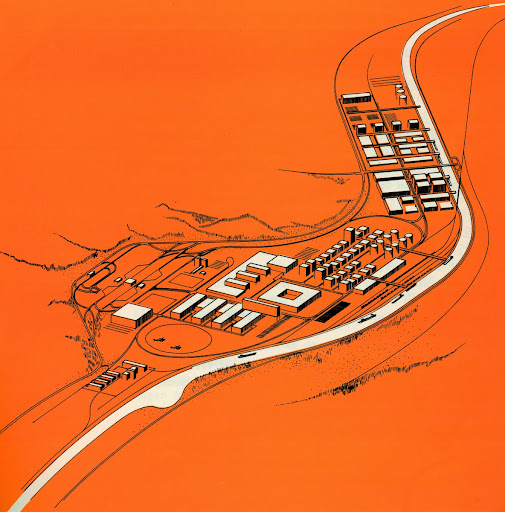

Connected trips from the home garage through depots and stations.
Official research benchmark
Route beyond
distance.
Plan multi-product deliveries by balancing route length, vehicle capacity and the operational cost of preparing each loading.
150 official instances
150 zero-cost twins
1:1 paired comparison

The challenge
One fleet.
Several products.
Real trade-offs.
One product per trip, with preparation costs at loading.
Split deliveries with one visit per vehicle, station and product.
Official · evaluated
With transition costs
150 instances with directed loading-transition matrices.
Download ZIP → Comparative · self-evaluationWithout transition costs
The same network data with every transition cost set to zero.
Download ZIP →Validate locally, submit any subset of solutions, and improve progressively across the benchmark.